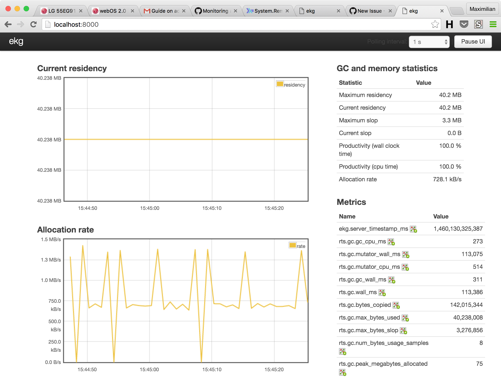
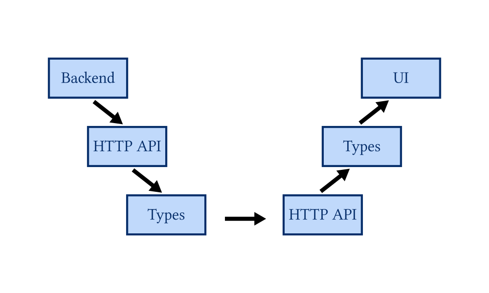
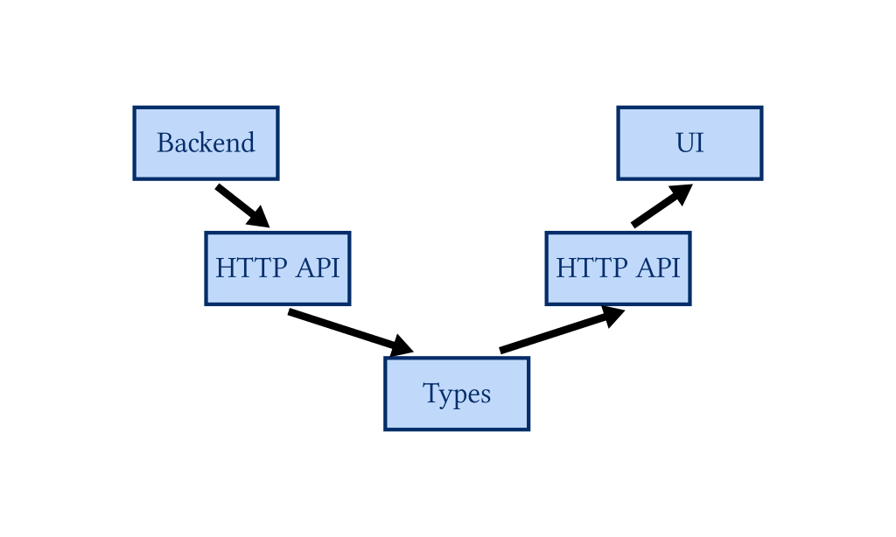
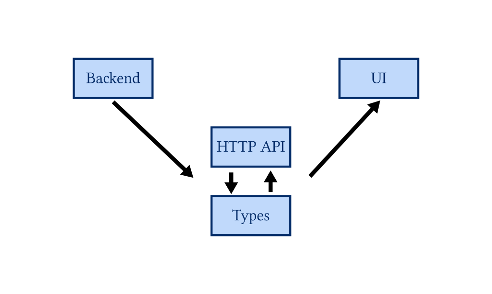
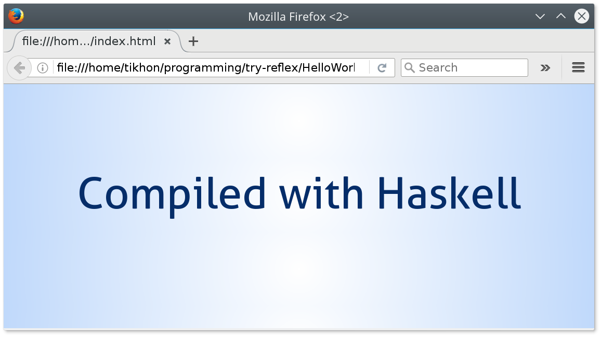
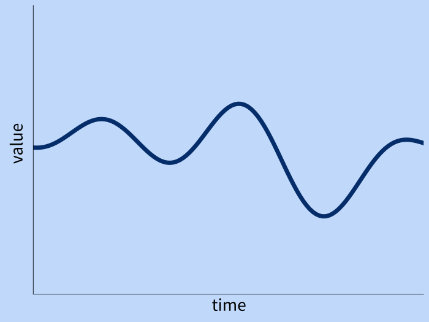
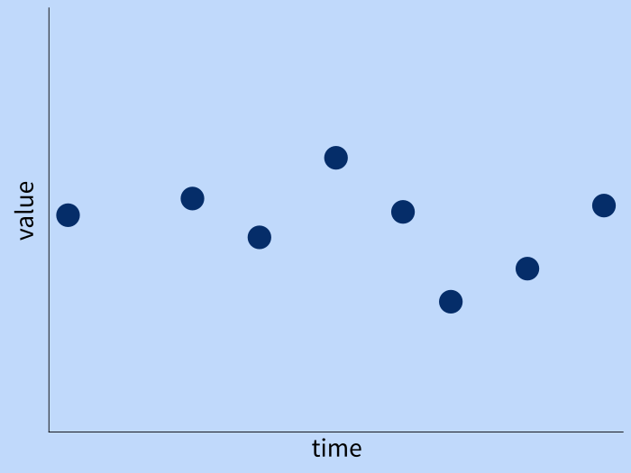
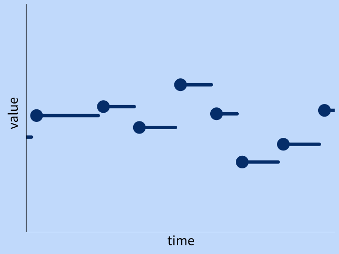
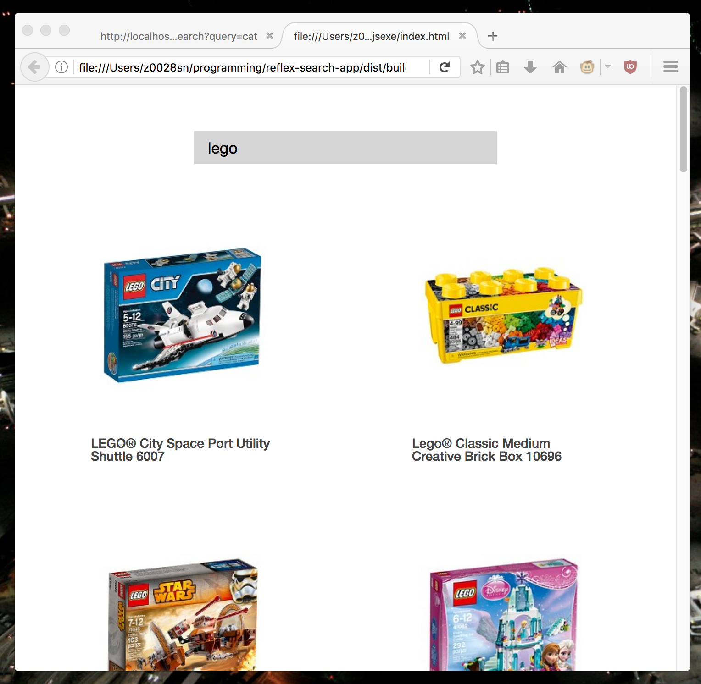

Less important.



main = mainWith
(text "Compiled With Haskell")

Behavior (Int, Int)Event (Int, Int)Behavior = Time → a

Event = [(Time, a)]

Dynamic = Event + Behavior 
text ← textInput inputConfig
text ^. value :: Dynamic t Text
tick :: NominalDiffTime
→ UTCTime → m (Event t ())
gate :: B t Bool → E t a → E t a
hold :: a → E t a → m (B t a)
tag :: B t b → E t a → E t b
-- typeclasses:
fmap :: (a → b) → E t a → E t b
(<*>) :: B (a → b) → B a → B b
dynText :: MonadWidget t m ⇒
Dynamic t Text → m ()
dyn :: MonadWidget t m ⇒
Dynamci t (m a) → m (Event t a)

{
"id" : "abcdefgh",
"url" : "http://...",
"name" : "Some Item"
}
data Product = Product
{ id :: Text
, url :: Text
, name :: Text
}
deriving (..., Generic, FromJSON)
search query = do
urls = fmap url query
products <- getAndDecode urls
holdDyn Nothing products
where url param = "..." <> param
do text <- textInput def
queries <- updated $ t ^. value
products <- search queries
products :: Event t (Maybe [Product])
productEntry Product {..} =
elClass "li" "product" $ do
elAttr "img" [...] (return ())
el "div" $ text name
dyn $ productWidget products
Created by Tikhon Jelvis.